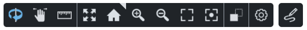
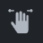
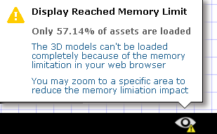

Viewer
The viewer renders the 3D content of the view and presents a viewer toolbar, navigation compass, content browser, notes explorer, and scratch pad.
The navigation compass indicates view direction and inclination in degrees. The compass north arrow points to plant north.
The view direction and viewpoint can be manipulated via the viewer toolbar, mouse, and/or touch screen gestures.
The content browser lets you explore/browse the asset content of the knowledge view. Click here to learn more about the content browser.
The display manager lets you manage what is displayed in the viewer. Click here to learn more about the display manager.
The notes explorer lets you explore and add knowledge view notes. Click here to learn how to work with knowledge view notes.
The scratch pad lets you explore scratch pad pages. Click here to learn how to work with scratch pad pages.

Viewer Toolbar

The active mode or command is highlighted:
|
|
Active |
Not Active |


The viewer toolbar provides the following functions:
|
Sets the viewer in Examine Mode. In examine mode, you can rotate, pan or zoom the view and pick an asset. |
 |
Sets the viewer in Pan Mode. In pan mode, you can pan or zoom the view and pick an asset. |
|
Sets the viewer in Measure Mode. In measure mode, you can pan, zoom and place measurement points. |
Zoom All - Command which centers all visible assets in the view. |
|
|
Home - Command which reverts the view to the default Knowledge View camera direction, position, and 3D projection. |
Zoom In - Command to zoom closer to the assets in the viewer. |
|
|
Zoom Out - Command to zoom farther away from the assets in the viewer. |
|
Zoom Area - Command to zoom the view to a rectangular area. Clicking the Zoom Area icon lets you define a rectangular area. |
|
Focus - Command to set the viewer focal point. Clicking the Focus command lets you pick a focal point on an asset in the view. Picking a focal point centers the focal point of the view. |
|
X-ray - Command to set all assets in the viewer to be displayed using a gray, transparent appearance, resembling an X-ray image. The only asset which remains displayed opaque is the currently picked asset. This view mode is therefore useful for quickly finding a picked asset within a large scene. |
|
Settings - Command to change the viewer settings. Clicking the command lets you set canvas margin, the display of compass and zoom slider, 3D projection, lighting mode, and memory limit. Click here for more information about viewer settings. |
|
Create Scratch Pad Page - Command to create a new scratch pad page. See Scratch Pad. |


Zoom Slider
The zoom slider lets you move towards the focal point or away from the focal point (zoom in, zoom out).

Loading Status Bar
The process of loading assets in the viewer can be a time consuming process. The Loading Status Bar displays the progress of loading the viewer's content. The viewer progress only indicates the loading progress of what can be seen by the viewer. If the camera is rotated, for example, the progress bar will then show the new percentage of loading the current camera's perspective.

The Loading Status Bar will disappear in two circumstances:
- When the content is completely loaded in the viewer.
- When the memory threshold has been reached, and therefore no more content can be loaded.
In the case which the memory threshold has been reached, an icon and information will be made available in the lower right corner.

The amount of memory the viewer is allowed to use can be configured. See Settings.
CAUTION is advised with increasing allowed memory, as it may result in slower performance of the viewer. |